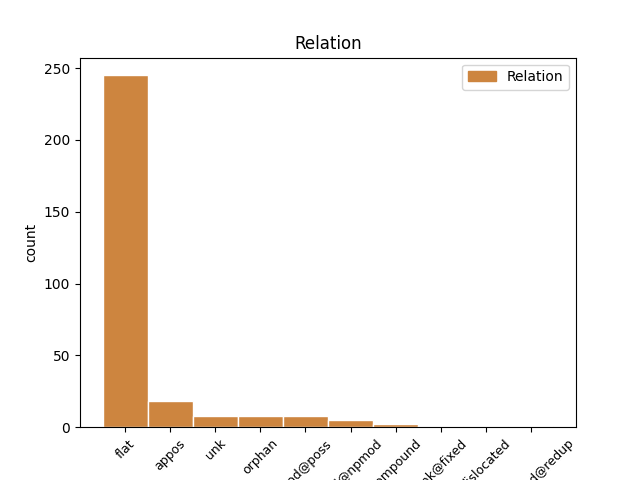
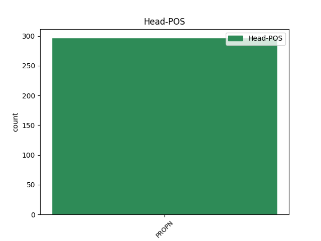
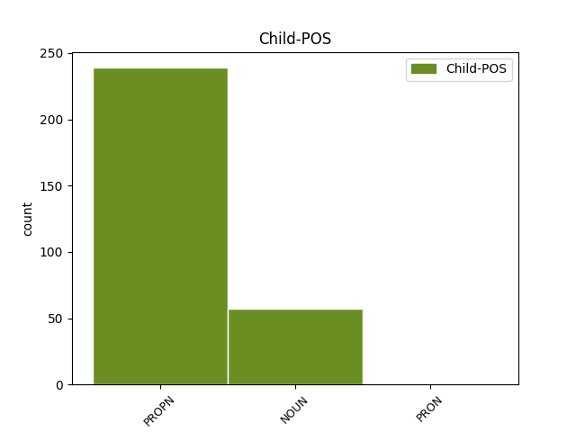

Distribution of features within this leaf



Agreement Rules sorted by frequency.
- When the dependent token is the flat multiword expression(flat) of the head token, and the head token is PROPN and the dependent token is PROPN.
1 Արմեն _ _ _ _ 0 _ _ _
2 Աշոտյանը _ _ _ _ 0 _ _ _
3 , _ _ _ _ 0 _ _ _
4 որը _ _ _ _ 0 _ _ _
5 , _ _ _ _ 0 _ _ _
6 ըստ _ _ _ _ 0 _ _ _
7 մամուլի _ _ _ _ 0 _ _ _
8 , _ _ _ _ 0 _ _ _
9 կարող _ _ _ _ 0 _ _ _
10 է _ _ _ _ 0 _ _ _
11 խորհրդարանի _ _ _ _ 0 _ _ _
12 նախագահ _ _ _ _ 0 _ _ _
13 դառնալ _ _ _ _ 0 _ _ _
14 , _ _ _ _ 0 _ _ _
15 մեկնաբանելով _ _ _ _ 0 _ _ _
16 ՀՀԿ-ի _ _ _ _ 0 _ _ _
17 « _ _ _ _ 0 _ _ _
18 անվտանգություն _ _ _ _ 0 _ _ _
19 և _ _ _ _ 0 _ _ _
20 առաջընթաց _ _ _ _ 0 _ _ _
21 » _ _ _ _ 0 _ _ _
22 կարգախոսը _ _ _ _ 0 _ _ _
23 , _ _ _ _ 0 _ _ _
24 ասել _ _ _ _ 0 _ _ _
25 է _ _ _ _ 0 _ _ _
26 , _ _ _ _ 0 _ _ _
27 որ _ _ _ _ 0 _ _ _
28 « _ _ _ _ 0 _ _ _
29 առաջընթացը _ _ _ _ 0 _ _ _
30 » _ _ _ _ 0 _ _ _
31 ապահովելու _ _ _ _ 0 _ _ _
32 է _ _ _ _ 0 _ _ _
33 Կարեն _ _ _ _ 0 _ _ _
34 Կարապետյանի _ _ _ _ 0 _ _ _
35 կառավարությունը _ _ _ _ 0 _ _ _
36 , _ _ _ _ 0 _ _ _
37 իսկ _ _ _ _ 0 _ _ _
38 « _ _ _ _ 0 _ _ _
39 անվտանգության _ _ _ _ 0 _ _ _
40 » _ _ _ _ 0 _ _ _
41 մարմնավորումը _ _ _ _ 0 _ _ _
42 Սերժ Սերժ PROPN _ Animacy=Hum|Case=Nom|Definite=Ind|NameType=Giv|Number=Sing 0 _ _ _
43 Սարգսյանն Սարգսյան PROPN _ Animacy=Hum|Case=Nom|Definite=Def|NameType=Sur|Number=Sing 42 flat _ LTranslit=Sargsyan|Translit=Sargsyann
44 է _ _ _ _ 0 _ _ _
45 : _ _ _ _ 0 _ _ _
1 Արձակագիր _ _ _ _ 0 _ _ _
2 , _ _ _ _ 0 _ _ _
3 « _ _ _ _ 0 _ _ _
4 Եվրասիա _ _ _ _ 0 _ _ _
5 » _ _ _ _ 0 _ _ _
6 համագործակցության _ _ _ _ 0 _ _ _
7 հիմնադրամի _ _ _ _ 0 _ _ _
8 տնօրեն _ _ _ _ 0 _ _ _
9 Գևորգ Գևորգ PROPN _ Animacy=Hum|Case=Nom|Definite=Ind|NameType=Giv|Number=Sing 0 _ _ _
10 Տեր տեր NOUN _ Animacy=Hum|Case=Nom|Definite=Ind|Number=Sing 9 flat _ LTranslit=ter|SpaceAfter=No|Translit=Ter
11 - _ _ _ _ 0 _ _ _
12 Գաբրիելյանը _ _ _ _ 0 _ _ _
13 Lragir.am _ _ _ _ 0 _ _ _
14 - _ _ _ _ 0 _ _ _
15 ի _ _ _ _ 0 _ _ _
16 հետ _ _ _ _ 0 _ _ _
17 զրույցում _ _ _ _ 0 _ _ _
18 անդրադարձել _ _ _ _ 0 _ _ _
19 է _ _ _ _ 0 _ _ _
20 Հայաստանում _ _ _ _ 0 _ _ _
21 տեղի _ _ _ _ 0 _ _ _
22 ունեցող _ _ _ _ 0 _ _ _
23 զարգացումներին _ _ _ _ 0 _ _ _
1 ՆԱԻՐԱ Նաիրա PROPN _ Animacy=Hum|Case=Nom|Definite=Ind|NameType=Giv|Number=Sing 0 _ _ _
2 ՀԱՅՐՈՒՄՅԱՆ _ _ _ _ 0 _ _ _
3 , _ _ _ _ 0 _ _ _
4 Մեկնաբան մեկնաբան NOUN _ Animacy=Hum|Case=Nom|Definite=Ind|Number=Sing 1 appos _ LTranslit=meknaban|Translit=Meknaban
1 2016 _ _ _ _ 0 _ _ _
2 թվականի _ _ _ _ 0 _ _ _
3 հունվարին _ _ _ _ 0 _ _ _
4 Մեծ _ _ _ _ 0 _ _ _
5 Սևանի _ _ _ _ 0 _ _ _
6 ափամերձ _ _ _ _ 0 _ _ _
7 գոտու _ _ _ _ 0 _ _ _
8 ջրի _ _ _ _ 0 _ _ _
9 միջին _ _ _ _ 0 _ _ _
10 ջերմաստիճանը _ _ _ _ 0 _ _ _
11 կազմել _ _ _ _ 0 _ _ _
12 էր _ _ _ _ 0 _ _ _
13 2,7 _ _ _ _ 0 _ _ _
14 աստիճան _ _ _ _ 0 _ _ _
15 , _ _ _ _ 0 _ _ _
16 իսկ _ _ _ _ 0 _ _ _
17 Փոքր _ _ _ _ 0 _ _ _
18 Սևանինը Սևանի PROPN _ Animacy=Nhum|Case=Nom|Definite=Def|NameType=Geo|Number=Sing|Number[psor]=Sing|Poss=Yes 0 _ _ _
19 ` _ _ _ _ 0 _ _ _
20 3 _ _ _ _ 0 _ _ _
21 աստիճան աստիճան NOUN _ Animacy=Nhum|Case=Nom|Definite=Ind|Number=Sing 18 orphan _ LTranslit=astič̣an|SpaceAfter=No|Translit=astič̣an
22 : _ _ _ _ 0 _ _ _
1 ՕՐՕ _ _ _ _ 0 _ _ _
2 դաշինքի _ _ _ _ 0 _ _ _
3 ներկայացուցիչները _ _ _ _ 0 _ _ _
4 հանդիպեցին _ _ _ _ 0 _ _ _
5 Վազաշենի _ _ _ _ 0 _ _ _
6 , _ _ _ _ 0 _ _ _
7 Չինարիի _ _ _ _ 0 _ _ _
8 , _ _ _ _ 0 _ _ _
9 Բերդի Բերդ PROPN _ Animacy=Nhum|Case=Dat|Definite=Ind|NameType=Geo|Number=Sing 10 mod@poss _ LTranslit=Berd|Translit=Berdi
10 Այգեձորի Այգեձոր PROPN _ Animacy=Nhum|Case=Dat|Definite=Ind|NameType=Geo|Number=Sing 0 _ _ _
11 , _ _ _ _ 0 _ _ _
12 Արծվաբերդի _ _ _ _ 0 _ _ _
13 , _ _ _ _ 0 _ _ _
14 Վերին _ _ _ _ 0 _ _ _
15 Կարմիրաղբյուրի _ _ _ _ 0 _ _ _
16 և _ _ _ _ 0 _ _ _
17 Պառավաքարի _ _ _ _ 0 _ _ _
18 բնակիչների _ _ _ _ 0 _ _ _
19 հետ _ _ _ _ 0 _ _ _
20 ։ _ _ _ _ 0 _ _ _
1 2017 _ _ _ _ 0 _ _ _
2 թվականի _ _ _ _ 0 _ _ _
3 հունվարին _ _ _ _ 0 _ _ _
4 Արփա Արփա PROPN _ Animacy=Nhum|Case=Nom|Definite=Ind|NameType=Geo|Number=Sing 0 _ _ _
5 - _ _ _ _ 0 _ _ _
6 Սևան Սևան PROPN _ Animacy=Nhum|Case=Nom|Definite=Ind|NameType=Geo|Number=Sing 4 compound _ LTranslit=Sewan|Translit=Sewan
7 ջրատարով _ _ _ _ 0 _ _ _
8 Սևանա _ _ _ _ 0 _ _ _
9 լիճ _ _ _ _ 0 _ _ _
10 մուտք _ _ _ _ 0 _ _ _
11 գործած _ _ _ _ 0 _ _ _
12 ջրի _ _ _ _ 0 _ _ _
13 ծավալը _ _ _ _ 0 _ _ _
14 ( _ _ _ _ 0 _ _ _
15 ներառյալ _ _ _ _ 0 _ _ _
16 ջրատարի _ _ _ _ 0 _ _ _
17 հատվածքով _ _ _ _ 0 _ _ _
18 ստորերկրյա _ _ _ _ 0 _ _ _
19 ներհոսքը _ _ _ _ 0 _ _ _
20 ) _ _ _ _ 0 _ _ _
21 կազմել _ _ _ _ 0 _ _ _
22 է _ _ _ _ 0 _ _ _
23 2 _ _ _ _ 0 _ _ _
24 մլրդ _ _ _ _ 0 _ _ _
25 630 _ _ _ _ 0 _ _ _
26 մլն _ _ _ _ 0 _ _ _
27 խմ _ _ _ _ 0 _ _ _
28 , _ _ _ _ 0 _ _ _
29 իսկ _ _ _ _ 0 _ _ _
30 2016 _ _ _ _ 0 _ _ _
31 թվականի _ _ _ _ 0 _ _ _
32 հունվարին _ _ _ _ 0 _ _ _
33 այն _ _ _ _ 0 _ _ _
34 կազմել _ _ _ _ 0 _ _ _
35 էր _ _ _ _ 0 _ _ _
36 2 _ _ _ _ 0 _ _ _
37 մլրդ _ _ _ _ 0 _ _ _
38 471 _ _ _ _ 0 _ _ _
39 մլն _ _ _ _ 0 _ _ _
40 խմ _ _ _ _ 0 _ _ _
41 : _ _ _ _ 0 _ _ _
1 Ինչպես _ _ _ _ 0 _ _ _
2 տեղեկացնում _ _ _ _ 0 _ _ _
3 է _ _ _ _ 0 _ _ _
4 « _ _ _ _ 0 _ _ _
5 Արմենպրես Արմենպրես PROPN _ Abbr=Yes|Animacy=Nhum|Case=Nom|Definite=Ind|NameType=Com|Number=Sing 0 _ _ _
6 » _ _ _ _ 0 _ _ _
7 - _ _ _ _ 0 _ _ _
8 ը ը NOUN _ Animacy=Nhum|Case=Nom|Definite=Def|Number=Sing 5 unk _ LTranslit=ë|SpaceAfter=No|Translit=ë
9 ` _ _ _ _ 0 _ _ _
10 վկայակոչելով _ _ _ _ 0 _ _ _
11 ՀՀ _ _ _ _ 0 _ _ _
12 ազգային _ _ _ _ 0 _ _ _
13 վիճակագրական _ _ _ _ 0 _ _ _
14 ծառայության _ _ _ _ 0 _ _ _
15 տվյալները _ _ _ _ 0 _ _ _
16 , _ _ _ _ 0 _ _ _
17 նախորդ _ _ _ _ 0 _ _ _
18 ամսվա _ _ _ _ 0 _ _ _
19 համեմատ _ _ _ _ 0 _ _ _
20 այն _ _ _ _ 0 _ _ _
21 նվազել _ _ _ _ 0 _ _ _
22 է _ _ _ _ 0 _ _ _
23 1 _ _ _ _ 0 _ _ _
24 սմ-ով _ _ _ _ 0 _ _ _
25 , _ _ _ _ 0 _ _ _
26 իսկ _ _ _ _ 0 _ _ _
27 նախորդ _ _ _ _ 0 _ _ _
28 տարվա _ _ _ _ 0 _ _ _
29 նույն _ _ _ _ 0 _ _ _
30 օրվա _ _ _ _ 0 _ _ _
31 համեմատ _ _ _ _ 0 _ _ _
32 այն _ _ _ _ 0 _ _ _
33 բարձրացել _ _ _ _ 0 _ _ _
34 է _ _ _ _ 0 _ _ _
35 23 _ _ _ _ 0 _ _ _
36 սմ-ով _ _ _ _ 0 _ _ _
37 : _ _ _ _ 0 _ _ _
1 Էդպես _ _ _ _ 0 _ _ _
2 վերացնում _ _ _ _ 0 _ _ _
3 էինք _ _ _ _ 0 _ _ _
4 Գումբա _ _ _ _ 0 _ _ _
5 սնկերին _ _ _ _ 0 _ _ _
6 , _ _ _ _ 0 _ _ _
7 իսկ _ _ _ _ 0 _ _ _
8 Կուպա _ _ _ _ 0 _ _ _
9 կրիաները _ _ _ _ 0 _ _ _
10 միառժամանակ _ _ _ _ 0 _ _ _
11 սառչում _ _ _ _ 0 _ _ _
12 էին _ _ _ _ 0 _ _ _
13 իրենց _ _ _ _ 0 _ _ _
14 պատյաններում _ _ _ _ 0 _ _ _
15 , _ _ _ _ 0 _ _ _
16 բայց _ _ _ _ 0 _ _ _
17 կային _ _ _ _ 0 _ _ _
18 և _ _ _ _ 0 _ _ _
19 էնպիսիք _ _ _ _ 0 _ _ _
20 , _ _ _ _ 0 _ _ _
21 որոնց _ _ _ _ 0 _ _ _
22 գլխին _ _ _ _ 0 _ _ _
23 թռչել _ _ _ _ 0 _ _ _
24 չէր _ _ _ _ 0 _ _ _
25 կարելի _ _ _ _ 0 _ _ _
26 , _ _ _ _ 0 _ _ _
27 ասենք _ _ _ _ 0 _ _ _
28 , _ _ _ _ 0 _ _ _
29 Սփինի _ _ _ _ 0 _ _ _
30 վայրենակերպերը _ _ _ _ 0 _ _ _
31 կամ _ _ _ _ 0 _ _ _
32 ջրաշխարհում _ _ _ _ 0 _ _ _
33 հանդիպող _ _ _ _ 0 _ _ _
34 Ծիպ Ծիպ PROPN _ Animacy=Hum|Case=Nom|Definite=Ind|NameType=Prs|Number=Sing 0 _ _ _
35 - _ _ _ _ 0 _ _ _
36 ծիպ Ծիպ PROPN _ Animacy=Hum|Case=Nom|Definite=Ind|NameType=Prs|Number=Sing 34 compound@redup _ LTranslit=Çip|Translit=çip
37 ձկները _ _ _ _ 0 _ _ _
38 , _ _ _ _ 0 _ _ _
39 ու _ _ _ _ 0 _ _ _
40 հատկապես _ _ _ _ 0 _ _ _
41 անդուր _ _ _ _ 0 _ _ _
42 էին _ _ _ _ 0 _ _ _
43 Համեր _ _ _ _ 0 _ _ _
44 ախպերները _ _ _ _ 0 _ _ _
45 , _ _ _ _ 0 _ _ _
46 որ _ _ _ _ 0 _ _ _
47 մուրճեր _ _ _ _ 0 _ _ _
48 էին _ _ _ _ 0 _ _ _
49 նետում _ _ _ _ 0 _ _ _
50 մեզ _ _ _ _ 0 _ _ _
51 վրա _ _ _ _ 0 _ _ _
52 ։ _ _ _ _ 0 _ _ _
1 Մարդկանց _ _ _ _ 0 _ _ _
2 ճակատագրի _ _ _ _ 0 _ _ _
3 այդ _ _ _ _ 0 _ _ _
4 տնօրենները _ _ _ _ 0 _ _ _
5 ապրելու _ _ _ _ 0 _ _ _
6 - _ _ _ _ 0 _ _ _
7 մեռնելու _ _ _ _ 0 _ _ _
8 ընտրությունը _ _ _ _ 0 _ _ _
9 մի _ _ _ _ 0 _ _ _
10 րոպե _ _ _ _ 0 _ _ _
11 իրենց _ _ _ _ 0 _ _ _
12 ՝ _ _ _ _ 0 _ _ _
13 Շաքրոյին _ _ _ _ 0 _ _ _
14 ու _ _ _ _ 0 _ _ _
15 Իգնատին _ _ _ _ 0 _ _ _
16 են _ _ _ _ 0 _ _ _
17 թողել _ _ _ _ 0 _ _ _
18 . _ _ _ _ 0 _ _ _
19 իրենց _ _ _ _ 0 _ _ _
20 մեջ _ _ _ _ 0 _ _ _
21 թող _ _ _ _ 0 _ _ _
22 վճռեն _ _ _ _ 0 _ _ _
23 , _ _ _ _ 0 _ _ _
24 թե _ _ _ _ 0 _ _ _
25 ով _ _ _ _ 0 _ _ _
26 է _ _ _ _ 0 _ _ _
27 ճակատ _ _ _ _ 0 _ _ _
28 գնում _ _ _ _ 0 _ _ _
29 և _ _ _ _ 0 _ _ _
30 ով _ _ _ _ 0 _ _ _
31 է _ _ _ _ 0 _ _ _
32 ետ _ _ _ _ 0 _ _ _
33 գյուղ _ _ _ _ 0 _ _ _
34 դառնում _ _ _ _ 0 _ _ _
35 , _ _ _ _ 0 _ _ _
36 բայց _ _ _ _ 0 _ _ _
37 պապը _ _ _ _ 0 _ _ _
38 հանկարծ _ _ _ _ 0 _ _ _
39 գլխի _ _ _ _ 0 _ _ _
40 է _ _ _ _ 0 _ _ _
41 ընկել _ _ _ _ 0 _ _ _
42 , _ _ _ _ 0 _ _ _
43 որ _ _ _ _ 0 _ _ _
44 ռազմա _ _ _ _ 0 _ _ _
45 - _ _ _ _ 0 _ _ _
46 բանակային _ _ _ _ 0 _ _ _
47 կյանքի _ _ _ _ 0 _ _ _
48 շուքը _ _ _ _ 0 _ _ _
49 գուցե _ _ _ _ 0 _ _ _
50 հրապուրի _ _ _ _ 0 _ _ _
51 լավ _ _ _ _ 0 _ _ _
52 ձիու ձի NOUN _ Animacy=Nhum|Case=Dat|Definite=Ind|Number=Sing 63 mod@poss _ LTranslit=ji|SpaceAfter=No|Translit=jiow
53 , _ _ _ _ 0 _ _ _
54 երգի _ _ _ _ 0 _ _ _
55 , _ _ _ _ 0 _ _ _
56 լավ _ _ _ _ 0 _ _ _
57 հագուստի _ _ _ _ 0 _ _ _
58 , _ _ _ _ 0 _ _ _
59 քրոմե _ _ _ _ 0 _ _ _
60 սապոգների _ _ _ _ 0 _ _ _
61 ու _ _ _ _ 0 _ _ _
62 կարգադրությունների _ _ _ _ 0 _ _ _
63 Շաքրոյին Շաքրո PROPN _ Animacy=Hum|Case=Dat|Definite=Def|NameType=Giv|Number=Sing 0 _ _ _
64 և _ _ _ _ 0 _ _ _
65 նույն _ _ _ _ 0 _ _ _
66 այդ _ _ _ _ 0 _ _ _
67 շուքը _ _ _ _ 0 _ _ _
68 վանի _ _ _ _ 0 _ _ _
69 ամաչկոտ _ _ _ _ 0 _ _ _
70 ու _ _ _ _ 0 _ _ _
71 մարդախույս _ _ _ _ 0 _ _ _
72 Իգնատին _ _ _ _ 0 _ _ _
73 , _ _ _ _ 0 _ _ _
74 և _ _ _ _ 0 _ _ _
75 պապը _ _ _ _ 0 _ _ _
76 ինքն _ _ _ _ 0 _ _ _
77 է _ _ _ _ 0 _ _ _
78 ընտրել _ _ _ _ 0 _ _ _
79 . _ _ _ _ 0 _ _ _
80 « _ _ _ _ 0 _ _ _
81 Իգնատին _ _ _ _ 0 _ _ _
82 տալիս _ _ _ _ 0 _ _ _
83 եմ _ _ _ _ 0 _ _ _
84 ... _ _ _ _ 0 _ _ _
85 Իգնատին _ _ _ _ 0 _ _ _
86 եմ _ _ _ _ 0 _ _ _
87 տալիս _ _ _ _ 0 _ _ _
88 , _ _ _ _ 0 _ _ _
89 այտա _ _ _ _ 0 _ _ _
90 , _ _ _ _ 0 _ _ _
91 Իգնատն _ _ _ _ 0 _ _ _
92 անլեզու _ _ _ _ 0 _ _ _
93 անճար _ _ _ _ 0 _ _ _
94 է _ _ _ _ 0 _ _ _
95 , _ _ _ _ 0 _ _ _
96 գյուղին _ _ _ _ 0 _ _ _
97 Իգնատը _ _ _ _ 0 _ _ _
98 չի _ _ _ _ 0 _ _ _
99 պետք _ _ _ _ 0 _ _ _
100 » _ _ _ _ 0 _ _ _
101 ։ _ _ _ _ 0 _ _ _
1 Մինչ _ _ _ _ 0 _ _ _
2 այս _ _ _ _ 0 _ _ _
3 , _ _ _ _ 0 _ _ _
4 խորվաթները _ _ _ _ 0 _ _ _
5 լուրջ _ _ _ _ 0 _ _ _
6 հաջողության _ _ _ _ 0 _ _ _
7 էին _ _ _ _ 0 _ _ _
8 հասել _ _ _ _ 0 _ _ _
9 1998 _ _ _ _ 0 _ _ _
10 թվականին _ _ _ _ 0 _ _ _
11 , _ _ _ _ 0 _ _ _
12 երբ _ _ _ _ 0 _ _ _
13 Միրոսլավ Միրոսլավ PROPN _ Animacy=Hum|Case=Nom|Definite=Ind|NameType=Giv|Number=Sing 0 _ _ _
14 ( _ _ _ _ 0 _ _ _
15 Չիրո Չիրո PROPN _ Animacy=Hum|Case=Nom|Definite=Ind|NameType=Prs|Number=Sing 13 appos _ LTranslit=Čiro|SpaceAfter=No|Translit=Čiro
16 ) _ _ _ _ 0 _ _ _
17 Բլաժևիչի _ _ _ _ 0 _ _ _
18 թիմը _ _ _ _ 0 _ _ _
19 հասել _ _ _ _ 0 _ _ _
20 էր _ _ _ _ 0 _ _ _
21 մինչև _ _ _ _ 0 _ _ _
22 կիսաեզրափակիչ _ _ _ _ 0 _ _ _
23 : _ _ _ _ 0 _ _ _
1 Շատ _ _ _ _ 0 _ _ _
2 էլ _ _ _ _ 0 _ _ _
3 թե _ _ _ _ 0 _ _ _
4 Մարտին Մարտին PROPN _ Animacy=Hum|Case=Nom|Definite=Ind|NameType=Giv|Number=Sing 0 _ _ _
5 Սահակյանը Սահակյան PROPN _ Animacy=Hum|Case=Nom|Definite=Def|NameType=Sur|Number=Sing 4 unk@fixed _ LTranslit=Sahakyan|SpaceAfter=No|Translit=Sahakyanë
6 , _ _ _ _ 0 _ _ _
7 մորից _ _ _ _ 0 _ _ _
8 , _ _ _ _ 0 _ _ _
9 տատից _ _ _ _ 0 _ _ _
10 և _ _ _ _ 0 _ _ _
11 էլ _ _ _ _ 0 _ _ _
12 չգիտենք _ _ _ _ 0 _ _ _
13 թե _ _ _ _ 0 _ _ _
14 ումից _ _ _ _ 0 _ _ _
15 ժառանգած _ _ _ _ 0 _ _ _
16 իր _ _ _ _ 0 _ _ _
17 մի _ _ _ _ 0 _ _ _
18 քիչ _ _ _ _ 0 _ _ _
19 անկախ _ _ _ _ 0 _ _ _
20 , _ _ _ _ 0 _ _ _
21 մի _ _ _ _ 0 _ _ _
22 քիչ _ _ _ _ 0 _ _ _
23 արհամարհական _ _ _ _ 0 _ _ _
24 կեցվածքը _ _ _ _ 0 _ _ _
25 հիմա _ _ _ _ 0 _ _ _
26 էլ _ _ _ _ 0 _ _ _
27 էր _ _ _ _ 0 _ _ _
28 պահպանում _ _ _ _ 0 _ _ _
29 , _ _ _ _ 0 _ _ _
30 շատ _ _ _ _ 0 _ _ _
31 էլ _ _ _ _ 0 _ _ _
32 թե _ _ _ _ 0 _ _ _
33 նրա _ _ _ _ 0 _ _ _
34 ուղեկցուհին _ _ _ _ 0 _ _ _
35 քայլում _ _ _ _ 0 _ _ _
36 էր _ _ _ _ 0 _ _ _
37 երիտասարդ _ _ _ _ 0 _ _ _
38 , _ _ _ _ 0 _ _ _
39 իր _ _ _ _ 0 _ _ _
40 հմայքների _ _ _ _ 0 _ _ _
41 գինն _ _ _ _ 0 _ _ _
42 իմացող _ _ _ _ 0 _ _ _
43 կնոջ _ _ _ _ 0 _ _ _
44 ինքնավստահությամբ _ _ _ _ 0 _ _ _
45 և _ _ _ _ 0 _ _ _
46 գեղեցիկ _ _ _ _ 0 _ _ _
47 գլուխը _ _ _ _ 0 _ _ _
48 ոչ _ _ _ _ 0 _ _ _
49 մի _ _ _ _ 0 _ _ _
50 անգամ _ _ _ _ 0 _ _ _
51 չթեքեց _ _ _ _ 0 _ _ _
52 մեր _ _ _ _ 0 _ _ _
53 միամիտ _ _ _ _ 0 _ _ _
54 , _ _ _ _ 0 _ _ _
55 քաղքենի _ _ _ _ 0 _ _ _
56 , _ _ _ _ 0 _ _ _
57 սնապարծ _ _ _ _ 0 _ _ _
58 ու _ _ _ _ 0 _ _ _
59 բարեհոգի _ _ _ _ 0 _ _ _
60 տների _ _ _ _ 0 _ _ _
61 կողմը _ _ _ _ 0 _ _ _
62 , _ _ _ _ 0 _ _ _
63 նրանց _ _ _ _ 0 _ _ _
64 վրա _ _ _ _ 0 _ _ _
65 խարան _ _ _ _ 0 _ _ _
66 կար _ _ _ _ 0 _ _ _
67 , _ _ _ _ 0 _ _ _
68 ինչ _ _ _ _ 0 _ _ _
69 - _ _ _ _ 0 _ _ _
70 որ _ _ _ _ 0 _ _ _
71 բանը _ _ _ _ 0 _ _ _
72 իր _ _ _ _ 0 _ _ _
73 հետքը _ _ _ _ 0 _ _ _
74 թողել _ _ _ _ 0 _ _ _
75 էր _ _ _ _ 0 _ _ _
76 նրանց _ _ _ _ 0 _ _ _
77 վրա _ _ _ _ 0 _ _ _
78 ։ _ _ _ _ 0 _ _ _
1 Հայոց _ _ _ _ 0 _ _ _
2 ցեղասպանության _ _ _ _ 0 _ _ _
3 կազմակերպիչներից _ _ _ _ 0 _ _ _
4 Ջեմալ _ _ _ _ 0 _ _ _
5 Փաշայի _ _ _ _ 0 _ _ _
6 թոռը թոռ NOUN _ Animacy=Hum|Case=Nom|Definite=Def|Number=Sing 11 dislocated _ LTranslit=t’oṙ|SpaceAfter=No|Translit=t’oṙë
7 ՝ _ _ _ _ 0 _ _ _
8 գրող _ _ _ _ 0 _ _ _
9 , _ _ _ _ 0 _ _ _
10 հրապարակախոս _ _ _ _ 0 _ _ _
11 Հասան Հասան PROPN _ Animacy=Hum|Case=Nom|Definite=Ind|NameType=Giv|Number=Sing 0 _ _ _
12 Ջեմալին _ _ _ _ 0 _ _ _
13 « _ _ _ _ 0 _ _ _
14 հանցախմբի _ _ _ _ 0 _ _ _
15 քարոզչություն _ _ _ _ 0 _ _ _
16 » _ _ _ _ 0 _ _ _
17 իրականացնելու _ _ _ _ 0 _ _ _
18 հիմնավորմամբ _ _ _ _ 0 _ _ _
19 սպառնում _ _ _ _ 0 _ _ _
20 է _ _ _ _ 0 _ _ _
21 մինչև _ _ _ _ 0 _ _ _
22 13 _ _ _ _ 0 _ _ _
23 տարվա _ _ _ _ 0 _ _ _
24 ազատազրկում _ _ _ _ 0 _ _ _
25 , _ _ _ _ 0 _ _ _
26 հաղորդում _ _ _ _ 0 _ _ _
27 է _ _ _ _ 0 _ _ _
28 թուրքական _ _ _ _ 0 _ _ _
29 Diken _ _ _ _ 0 _ _ _
30 լրատվամիջոցը _ _ _ _ 0 _ _ _
31 : _ _ _ _ 0 _ _ _
Disagree Examples:
1 1987 _ _ _ _ 0 _ _ _
2 թվականի _ _ _ _ 0 _ _ _
3 մայիսի _ _ _ _ 0 _ _ _
4 վերջին _ _ _ _ 0 _ _ _
5 ՝ _ _ _ _ 0 _ _ _
6 ավարտական _ _ _ _ 0 _ _ _
7 երեկոյի _ _ _ _ 0 _ _ _
8 օրը _ _ _ _ 0 _ _ _
9 , _ _ _ _ 0 _ _ _
10 Ակաթն _ _ _ _ 0 _ _ _
11 անզգուշորեն _ _ _ _ 0 _ _ _
12 ու _ _ _ _ 0 _ _ _
13 փիս _ _ _ _ 0 _ _ _
14 սայթաքեց _ _ _ _ 0 _ _ _
15 , _ _ _ _ 0 _ _ _
16 և _ _ _ _ 0 _ _ _
17 1988 _ _ _ _ 0 _ _ _
18 թվականի _ _ _ _ 0 _ _ _
19 ճիշտ _ _ _ _ 0 _ _ _
20 փետրվարի _ _ _ _ 0 _ _ _
21 20-ին _ _ _ _ 0 _ _ _
22 ՝ _ _ _ _ 0 _ _ _
23 երբ _ _ _ _ 0 _ _ _
24 օպերայի _ _ _ _ 0 _ _ _
25 բակն _ _ _ _ 0 _ _ _
26 ալեկոծվում _ _ _ _ 0 _ _ _
27 էր _ _ _ _ 0 _ _ _
28 , _ _ _ _ 0 _ _ _
29 օպերայից Օպերա PROPN _ Animacy=Nhum|Case=Abl|Definite=Ind|NameType=Geo|Number=Sing|Style=Coll 0 _ _ _
30 մի _ _ _ _ 0 _ _ _
31 կանգառ կանգառ NOUN _ Animacy=Nhum|Case=Nom|Definite=Ind|Number=Sing 29 mod@npmod _ LTranslit=kangaṙ|Translit=kangaṙ
32 ներքև _ _ _ _ 0 _ _ _
33 ՝ _ _ _ _ 0 _ _ _
34 Մարգարյանում _ _ _ _ 0 _ _ _
35 , _ _ _ _ 0 _ _ _
36 փաստորեն _ _ _ _ 0 _ _ _
37 , _ _ _ _ 0 _ _ _
38 ծննդաբերեց _ _ _ _ 0 _ _ _
39 ։ _ _ _ _ 0 _ _ _
1 1987 _ _ _ _ 0 _ _ _
2 թվականի _ _ _ _ 0 _ _ _
3 մայիսի _ _ _ _ 0 _ _ _
4 վերջին _ _ _ _ 0 _ _ _
5 ՝ _ _ _ _ 0 _ _ _
6 ավարտական _ _ _ _ 0 _ _ _
7 երեկոյի _ _ _ _ 0 _ _ _
8 օրը _ _ _ _ 0 _ _ _
9 , _ _ _ _ 0 _ _ _
10 Ակաթն _ _ _ _ 0 _ _ _
11 անզգուշորեն _ _ _ _ 0 _ _ _
12 ու _ _ _ _ 0 _ _ _
13 փիս _ _ _ _ 0 _ _ _
14 սայթաքեց _ _ _ _ 0 _ _ _
15 , _ _ _ _ 0 _ _ _
16 և _ _ _ _ 0 _ _ _
17 1988 _ _ _ _ 0 _ _ _
18 թվականի _ _ _ _ 0 _ _ _
19 ճիշտ _ _ _ _ 0 _ _ _
20 փետրվարի _ _ _ _ 0 _ _ _
21 20-ին _ _ _ _ 0 _ _ _
22 ՝ _ _ _ _ 0 _ _ _
23 երբ _ _ _ _ 0 _ _ _
24 օպերայի _ _ _ _ 0 _ _ _
25 բակն _ _ _ _ 0 _ _ _
26 ալեկոծվում _ _ _ _ 0 _ _ _
27 էր _ _ _ _ 0 _ _ _
28 , _ _ _ _ 0 _ _ _
29 օպերայից Օպերա PROPN _ Animacy=Nhum|Case=Abl|Definite=Ind|NameType=Geo|Number=Sing|Style=Coll 0 _ _ _
30 մի _ _ _ _ 0 _ _ _
31 կանգառ _ _ _ _ 0 _ _ _
32 ներքև _ _ _ _ 0 _ _ _
33 ՝ _ _ _ _ 0 _ _ _
34 Մարգարյանում Մարգարյան PROPN _ Animacy=Hum|Case=Loc|Definite=Ind|NameType=Sur|Number=Sing 29 appos _ LTranslit=Margaryan|SpaceAfter=No|Translit=Margaryanowm
35 , _ _ _ _ 0 _ _ _
36 փաստորեն _ _ _ _ 0 _ _ _
37 , _ _ _ _ 0 _ _ _
38 ծննդաբերեց _ _ _ _ 0 _ _ _
39 ։ _ _ _ _ 0 _ _ _
1 Դե _ _ _ _ 0 _ _ _
2 , _ _ _ _ 0 _ _ _
3 իրավաբանական _ _ _ _ 0 _ _ _
4 հենց _ _ _ _ 0 _ _ _
5 էնպես _ _ _ _ 0 _ _ _
6 էր _ _ _ _ 0 _ _ _
7 դիմել _ _ _ _ 0 _ _ _
8 , _ _ _ _ 0 _ _ _
9 որ _ _ _ _ 0 _ _ _
10 հետո _ _ _ _ 0 _ _ _
11 ասեր _ _ _ _ 0 _ _ _
12 ՝ _ _ _ _ 0 _ _ _
13 « _ _ _ _ 0 _ _ _
14 իրավաբանականից _ _ _ _ 0 _ _ _
15 դուրս _ _ _ _ 0 _ _ _
16 մնացի _ _ _ _ 0 _ _ _
17 , _ _ _ _ 0 _ _ _
18 փաստորեն _ _ _ _ 0 _ _ _
19 , _ _ _ _ 0 _ _ _
20 մի _ _ _ _ 0 _ _ _
21 աչոկով _ _ _ _ 0 _ _ _
22 » _ _ _ _ 0 _ _ _
23 , _ _ _ _ 0 _ _ _
24 համ _ _ _ _ 0 _ _ _
25 էլ _ _ _ _ 0 _ _ _
26 , _ _ _ _ 0 _ _ _
27 որովհետև _ _ _ _ 0 _ _ _
28 իրենց _ _ _ _ 0 _ _ _
29 դասարանի դասարան NOUN _ Animacy=Nhum|Case=Dat|Definite=Ind|Number=Sing 30 mod@poss _ LTranslit=dasaran|Translit=dasarani
30 Արտուրիկն Արտուրիկ PROPN _ Animacy=Hum|Case=Nom|Definite=Def|NameType=Giv|Number=Sing|Style=Expr 0 _ _ _
31 էլ _ _ _ _ 0 _ _ _
32 էր _ _ _ _ 0 _ _ _
33 իրավաբանական _ _ _ _ 0 _ _ _
34 դիմել _ _ _ _ 0 _ _ _
35 , _ _ _ _ 0 _ _ _
36 իսկ _ _ _ _ 0 _ _ _
37 ինքը _ _ _ _ 0 _ _ _
38 թաքուն _ _ _ _ 0 _ _ _
39 սիրահարված _ _ _ _ 0 _ _ _
40 էր _ _ _ _ 0 _ _ _
41 Արտուրիկին _ _ _ _ 0 _ _ _
42 , _ _ _ _ 0 _ _ _
43 բայց _ _ _ _ 0 _ _ _
44 վերջինս _ _ _ _ 0 _ _ _
45 , _ _ _ _ 0 _ _ _
46 էն _ _ _ _ 0 _ _ _
47 սայթաքելու _ _ _ _ 0 _ _ _
48 օրվանից _ _ _ _ 0 _ _ _
49 հետո _ _ _ _ 0 _ _ _
50 իր _ _ _ _ 0 _ _ _
51 հետ _ _ _ _ 0 _ _ _
52 չէր _ _ _ _ 0 _ _ _
53 խոսում _ _ _ _ 0 _ _ _
54 ։ _ _ _ _ 0 _ _ _
1 Դե _ _ _ _ 0 _ _ _
2 անունը _ _ _ _ 0 _ _ _
3 նաև _ _ _ _ 0 _ _ _
4 ցանկություններ _ _ _ _ 0 _ _ _
5 էր _ _ _ _ 0 _ _ _
6 բերում _ _ _ _ 0 _ _ _
7 . _ _ _ _ 0 _ _ _
8 մեկ _ _ _ _ 0 _ _ _
9 - _ _ _ _ 0 _ _ _
10 մեկ _ _ _ _ 0 _ _ _
11 էլ _ _ _ _ 0 _ _ _
12 գործից _ _ _ _ 0 _ _ _
13 հետո _ _ _ _ 0 _ _ _
14 , _ _ _ _ 0 _ _ _
15 գիշերով _ _ _ _ 0 _ _ _
16 , _ _ _ _ 0 _ _ _
17 միասին _ _ _ _ 0 _ _ _
18 տուն _ _ _ _ 0 _ _ _
19 գալիս _ _ _ _ 0 _ _ _
20 , _ _ _ _ 0 _ _ _
21 Արտուրիկ Արտուրիկ PROPN _ Animacy=Hum|Case=Nom|Definite=Ind|NameType=Giv|Number=Sing|Style=Expr 0 _ _ _
22 - _ _ _ _ 0 _ _ _
23 2-ի 2 NOUN _ Animacy=Nhum|Case=Dat|Definite=Ind|Number=Sing|NumForm=Digit 21 unk _ LTranslit=2|Translit=2-i
24 մեքենայի _ _ _ _ 0 _ _ _
25 մեջ _ _ _ _ 0 _ _ _
26 , _ _ _ _ 0 _ _ _
27 երբեմն _ _ _ _ 0 _ _ _
28 նաև _ _ _ _ 0 _ _ _
29 ՝ _ _ _ _ 0 _ _ _
30 երբ _ _ _ _ 0 _ _ _
31 մի _ _ _ _ 0 _ _ _
32 քիչ _ _ _ _ 0 _ _ _
33 ավել _ _ _ _ 0 _ _ _
34 փող _ _ _ _ 0 _ _ _
35 էր _ _ _ _ 0 _ _ _
36 ընկնում _ _ _ _ 0 _ _ _
37 ձեռքներն _ _ _ _ 0 _ _ _
38 ու _ _ _ _ 0 _ _ _
39 կարող _ _ _ _ 0 _ _ _
40 էին _ _ _ _ 0 _ _ _
41 շուկայի _ _ _ _ 0 _ _ _
42 կողքի _ _ _ _ 0 _ _ _
43 հյուրանոցում _ _ _ _ 0 _ _ _
44 մի _ _ _ _ 0 _ _ _
45 սենյակ _ _ _ _ 0 _ _ _
46 վերցնել _ _ _ _ 0 _ _ _
47 մի _ _ _ _ 0 _ _ _
48 քանի _ _ _ _ 0 _ _ _
49 ժամով _ _ _ _ 0 _ _ _
50 ... _ _ _ _ 0 _ _ _
1 Մհեր Մհեր PROPN _ Animacy=Hum|Case=Nom|Definite=Ind|NameType=Giv|Number=Sing 0 _ _ _
2 Մկրտչյանի Մկրտչյան PROPN _ Animacy=Hum|Case=Dat|Definite=Ind|NameType=Sur|Number=Sing 1 flat _ LTranslit=Mkrtčyan|Translit=Mkrtčyani
3 կինը _ _ _ _ 0 _ _ _
4 Սևանի _ _ _ _ 0 _ _ _
5 հոգեբուժարանում _ _ _ _ 0 _ _ _
6 մի _ _ _ _ 0 _ _ _
7 անգամ _ _ _ _ 0 _ _ _
8 ինձ _ _ _ _ 0 _ _ _
9 ասաց _ _ _ _ 0 _ _ _
10 ՝ _ _ _ _ 0 _ _ _
11 Մհեր _ _ _ _ 0 _ _ _
12 , _ _ _ _ 0 _ _ _
13 գիտես _ _ _ _ 0 _ _ _
14 ՞ _ _ _ _ 0 _ _ _
15 , _ _ _ _ 0 _ _ _
16 ես _ _ _ _ 0 _ _ _
17 հասկանում _ _ _ _ 0 _ _ _
18 եմ _ _ _ _ 0 _ _ _
19 , _ _ _ _ 0 _ _ _
20 որ _ _ _ _ 0 _ _ _
21 հոգեբուժարանում _ _ _ _ 0 _ _ _
22 եմ _ _ _ _ 0 _ _ _
23 և _ _ _ _ 0 _ _ _
24 այստեղից _ _ _ _ 0 _ _ _
25 պրծում _ _ _ _ 0 _ _ _
26 չունեմ _ _ _ _ 0 _ _ _
27 , _ _ _ _ 0 _ _ _
28 բայց _ _ _ _ 0 _ _ _
29 ես _ _ _ _ 0 _ _ _
30 գիժ _ _ _ _ 0 _ _ _
31 չեմ _ _ _ _ 0 _ _ _
32 , _ _ _ _ 0 _ _ _
33 որովհետև _ _ _ _ 0 _ _ _
34 դեռ _ _ _ _ 0 _ _ _
35 հայելու _ _ _ _ 0 _ _ _
36 մեջ _ _ _ _ 0 _ _ _
37 նայում _ _ _ _ 0 _ _ _
38 եմ _ _ _ _ 0 _ _ _
39 ինձ _ _ _ _ 0 _ _ _
40 , _ _ _ _ 0 _ _ _
41 հիշում _ _ _ _ 0 _ _ _
42 եմ _ _ _ _ 0 _ _ _
43 իմ _ _ _ _ 0 _ _ _
44 հմայքը _ _ _ _ 0 _ _ _
45 , _ _ _ _ 0 _ _ _
46 խաղում _ _ _ _ 0 _ _ _
47 եմ _ _ _ _ 0 _ _ _
48 իմ _ _ _ _ 0 _ _ _
49 դերերը _ _ _ _ 0 _ _ _
50 : _ _ _ _ 0 _ _ _